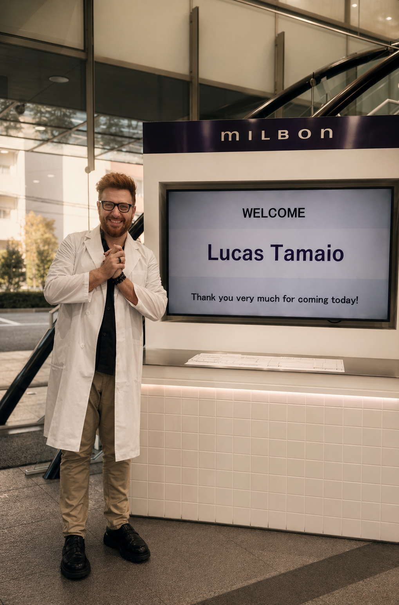
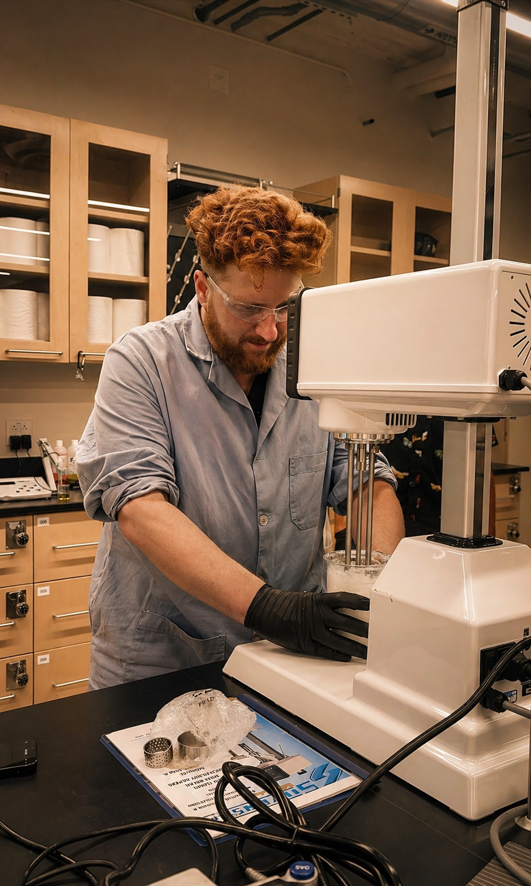
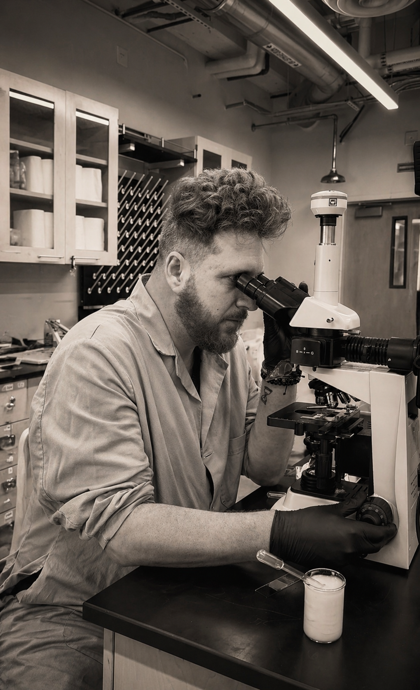
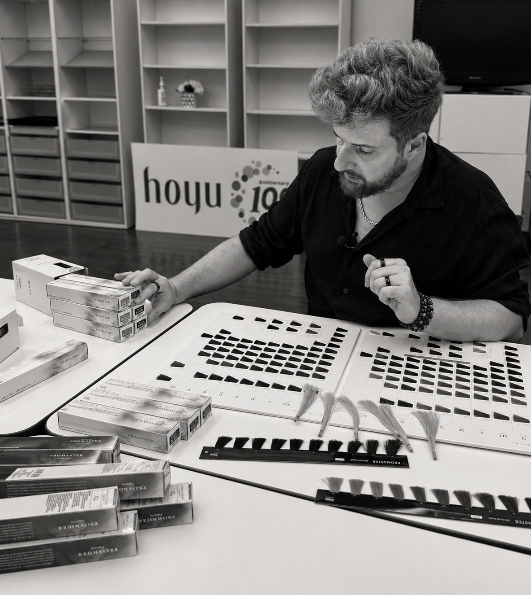
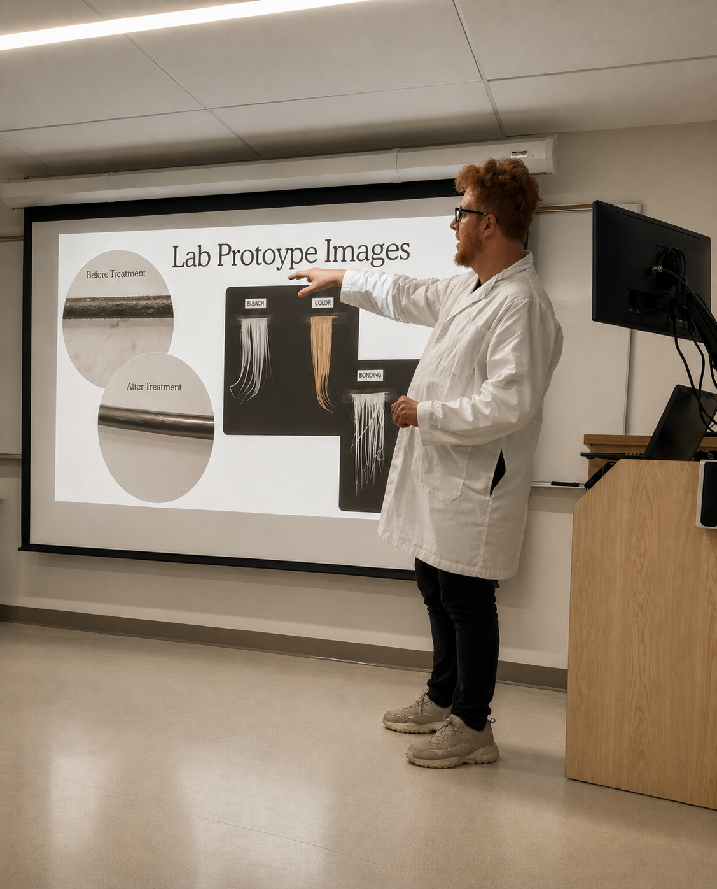

01
Melanin Profiling
Mapping eumelanin and pheomelanin distribution to determine true lift potential and oxidation strategy—before any chemical process begins.
Fiber Logic
Precision color methodology engineered for high-melanin, resistant hair—where lift, tone, and integrity are controlled, not guessed.
No guesswork. No correction cycles. No compromise.
About Kromah Lab
Kromah Lab is a science-driven education and consulting platform focused on high-melanin, resistant hair. We translate advanced color theory, fiber behavior, and formulation logic into refined methodologies that deliver controlled lift, cleaner tone, and long-term integrity. Built for stylists, educators, and brands, Kromah Lab bridges the gap between chemistry and real-world execution.
Hair is not repaired. It is managed. The goal is not to reverse damage, but to control it, prevent it, and compensate for what has been lost.
Applied Science
The Kromah Lab approach is built through real testing, product analysis, color system comparison, and education—not theory alone. These moments document the bridge between formulation, fiber behavior, and practical execution.





A proprietary three-phase system designed to navigate the structural limits of dark, resistant hair—delivering predictable outcomes while minimizing unnecessary damage and preserving fiber performance.
Mapping eumelanin and pheomelanin distribution to determine true lift potential and oxidation strategy—before any chemical process begins.
Engineered lightening using controlled oxidation curves that disperse pigment while preserving structural cohesion within resistant fiber types.
A post-process refinement system designed to compensate for structural loss—restoring hydrophobic behavior, improving surface alignment, and reducing further mechanical and environmental damage.
Kromah Lab Principle
“Precision is not optional. It is the only variable we control.”
Kromah Lab Consulting
I help professional beauty brands align formulation, education, and real-world performance—especially when working with dark, resistant hair, where damage cannot be reversed and control is everything.
Most professional hair brands do not fail because the product is bad. They struggle because performance, education, and positioning are disconnected.
Formulas are developed in isolation. Marketing simplifies what should be explained. Education often fails to translate into real salon behavior. The result is inconsistent performance, weak adoption, and missed opportunity.
Translating formulation into real-world performance through testing, fiber analysis, swatch work, model evaluation, and salon validation.
Adapting high-performance color systems across regions by aligning formulation logic, color behavior, cultural expectations, and salon habits.
Building technical education that helps stylists understand the product, use it correctly, and create consistent results behind the chair.
Refining how product performance is communicated so marketing, education, and technical claims feel aligned, credible, and useful.
Breaking down competitor systems, ingredient strategies, claims, performance gaps, and positioning opportunities with a salon-and-science lens.
For brands, labs, distributors, and education teams that need sharper product direction, clearer technical language, and stronger market relevance.
Why Kromah Lab
Most consultants understand formulation. Others understand the salon.
Very few understand how chemistry, education, marketing, and consumer behavior connect—and where they break down in real-world use.
Kromah Lab exists in that gap.
Education
Advanced education experiences designed for stylists, educators, and brands seeking mastery over dark, resistant hair—focused on controlled lift, damage prevention, and predictable outcomes.
Learn how to confidently lift, tone, and refine dark, resistant hair into luminous, trend-driven results—without relying on correction cycles or compromising the fiber.
Cultural Relevance
Today’s global demand is shaped by Asian beauty standards—tones like milk tea, greige, smoky mauve, and ash beige require a different understanding of color, lift, and pigment behavior.
Two hours of technical education using swatches, formulas, and visual breakdowns, followed by one hour of interactive Q&A focused on formulation challenges.
One hour of technical foundation followed by five hours of real-time technique performance with a live model, guided troubleshooting, and formulation discussion throughout the session.
A tailored experience designed around the client’s needs, combining technical education, hands-on execution, consultation strategy, or business-building modules.